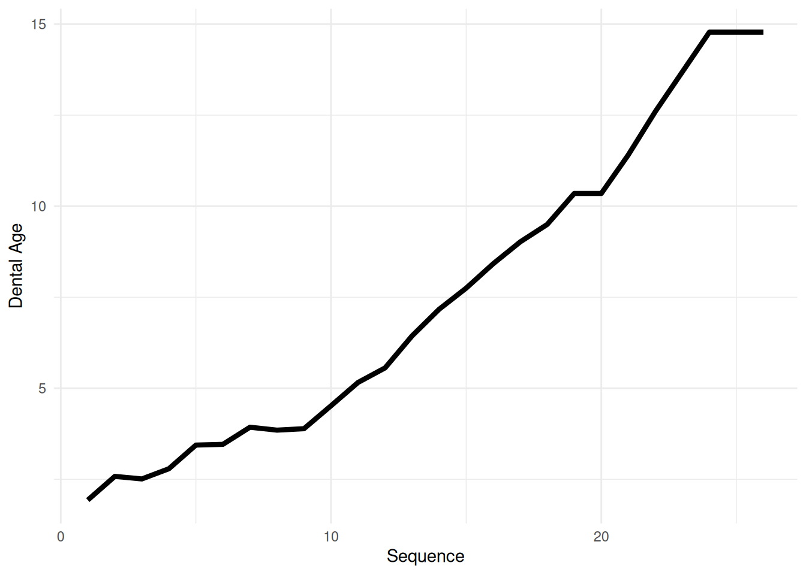
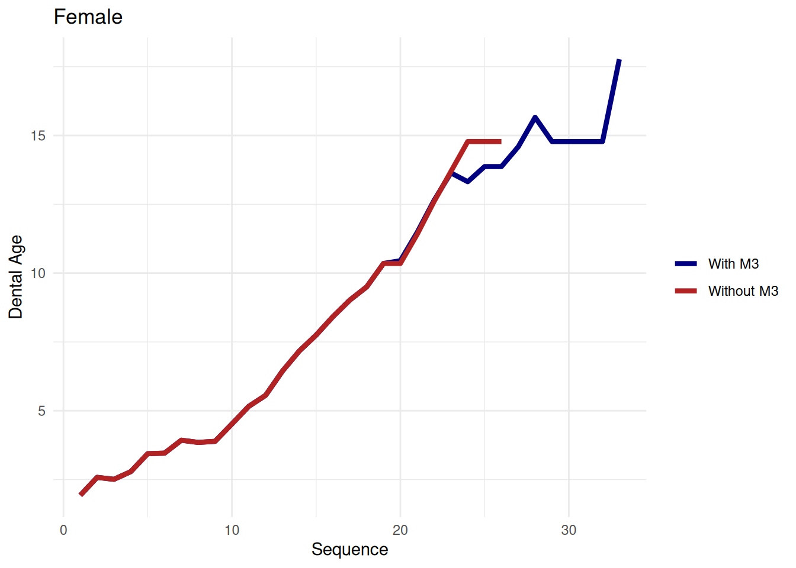
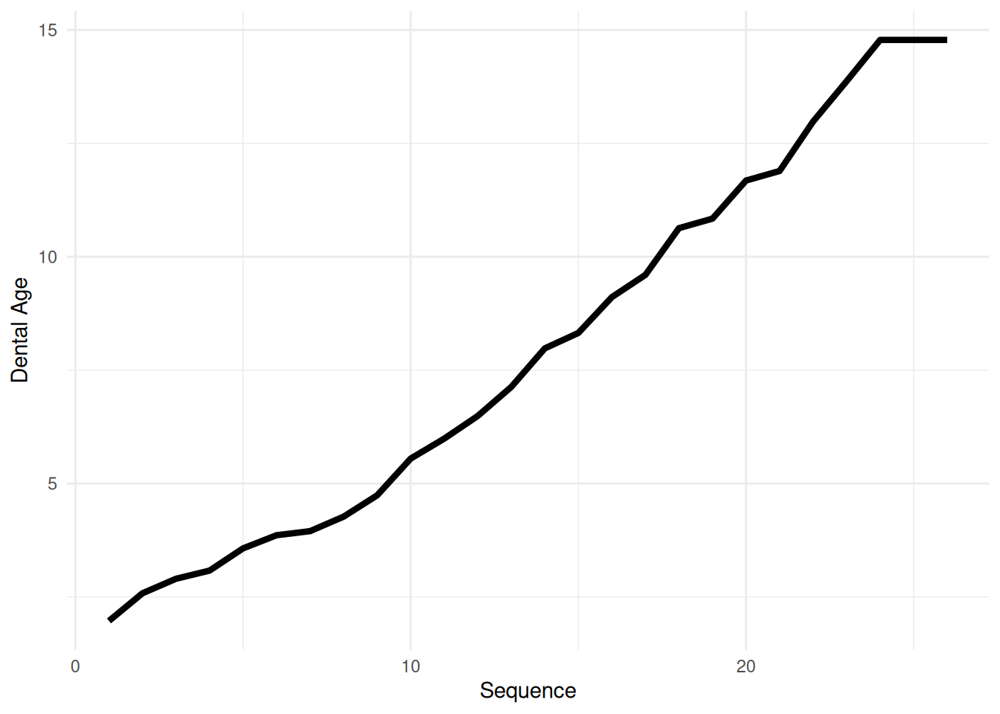
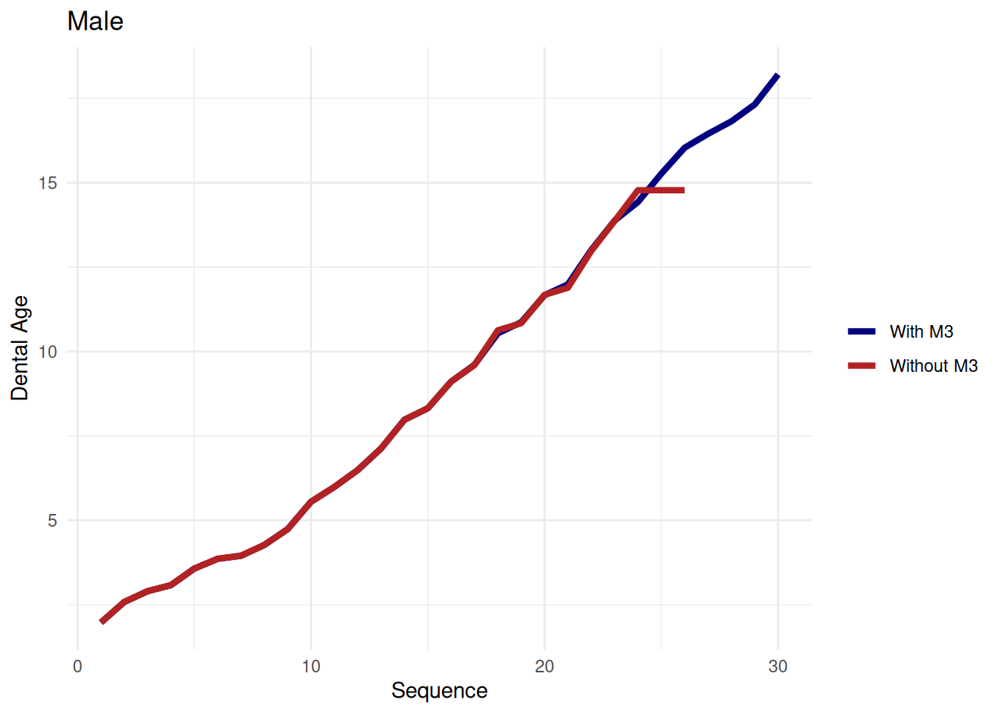
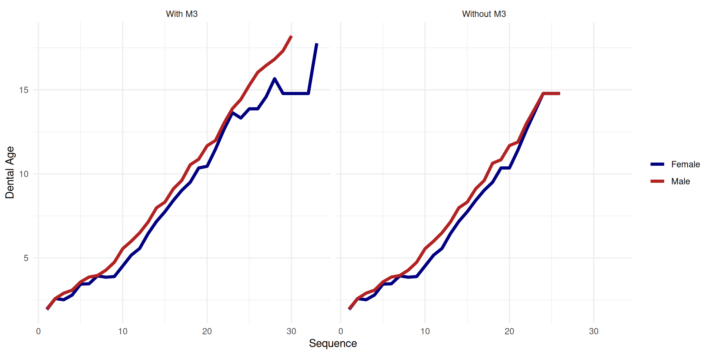

Dental age estimates generally increase as tooth stages advance. This vignette constructs fine-scale example progressions for females and males, starting with only the canine scored and gradually adding teeth, ending with all teeth at A.c except M3 at A.5.
Female progression with M3
female <- tribble(
~Sex , ~Canine , ~P3 , ~P4 , ~M1 , ~M2 , ~M3 ,
"F" , "C.oc" , NA , NA , NA , NA , NA ,
"F" , "Cr.5" , NA , NA , NA , NA , NA ,
"F" , "Cr.5" , "C.i" , NA , NA , NA , NA ,
"F" , "Cr.5" , "C.co" , NA , NA , NA , NA ,
"F" , "Cr.75" , "C.oc" , NA , NA , NA , NA ,
"F" , "Cr.75" , "C.oc" , NA , "R.i" , NA , NA ,
"F" , "Cr.75" , "Cr.5" , NA , "Cl.i" , NA , NA ,
"F" , "Cr.75" , "Cr.5" , NA , "Cl.i" , "C.i" , NA ,
"F" , "Cr.75" , "Cr.5" , "C.i" , "R.25" , "C.i" , NA ,
"F" , "Cr.c" , "Cr.75" , "C.co" , "R.25" , "C.co" , NA ,
"F" , "Cr.c" , "Cr.c" , "C.oc" , "R.5" , "C.oc" , NA ,
"F" , "Cr.c" , "Cr.c" , "Cr.5" , "R.5" , "Cr.5" , NA ,
"F" , "R.i" , "Cr.c" , "Cr.75" , "R.75" , "Cr.75" , NA ,
"F" , "R.i" , "R.i" , "Cr.c" , "R.75" , "Cr.c" , NA ,
"F" , "R.25" , "R.i" , "R.i" , "R.75" , "R.i" , NA ,
"F" , "R.25" , "R.25" , "R.i" , "R.c" , "Cl.i" , NA ,
"F" , "R.5" , "R.25" , "R.25" , "R.c" , "R.25" , NA ,
"F" , "R.5" , "R.5" , "R.25" , "A.5" , "R.25" , NA ,
"F" , "R.75" , "R.5" , "R.5" , "A.c" , "R.5" , NA ,
"F" , "R.75" , "R.5" , "R.5" , "A.c" , "R.5" , "C.oc" ,
"F" , "R.c" , "R.75" , "R.75" , "A.c" , "R.75" , "Cr.5" ,
"F" , "A.5" , "R.c" , "R.c" , "A.c" , "R.c" , "Cr.75" ,
"F" , "A.c" , "A.5" , "A.5" , "A.c" , "A.5" , "Cr.c" ,
"F" , "A.c" , "A.c" , "A.c" , "A.c" , "A.c" , "Cr.c" ,
"F" , "A.c" , "A.c" , "A.c" , "A.c" , "A.c" , "R.i" ,
"F" , "A.c" , "A.c" , "A.c" , "A.c" , "A.c" , "R.i" ,
"F" , "A.c" , "A.c" , "A.c" , "A.c" , "A.c" , "Cl.i" ,
"F" , "A.c" , "A.c" , "A.c" , "A.c" , "A.c" , "R.25" ,
"F" , "A.c" , "A.c" , "A.c" , "A.c" , "A.c" , "R.5" ,
"F" , "A.c" , "A.c" , "A.c" , "A.c" , "A.c" , "R.75" ,
"F" , "A.c" , "A.c" , "A.c" , "A.c" , "A.c" , "R.c" ,
"F" , "A.c" , "A.c" , "A.c" , "A.c" , "A.c" , "A.5" ,
"F" , "A.c" , "A.c" , "A.c" , "A.c" , "A.c" , "A.c" ,
)
female_results <- purrr::map_dfr(seq_len(nrow(female)), \(i) {
est <- estimate_dental_age(female[i, ], verbose = FALSE)
info <- ac_info(est)
tibble(
row = i,
dental_age = est[["dental_age"]],
ci_lower = est[["ci_lower"]],
ci_upper = est[["ci_upper"]],
n_estimable = info$n_estimable,
compatibility = info$compatibility
)
})
Females <- female |>
mutate(row = row_number()) |>
left_join(female_results, by = "row") |>
select(-Sex, -row) |>
mutate(across(c(dental_age, ci_lower, ci_upper), \(x) round(x, 2))) |>
mutate(row = row_number()) |>
relocate(row)
Females |>
gt() |>
sub_missing() |>
cols_label(
row = "Sequence",
dental_age = "Age",
ci_lower = "Lower",
ci_upper = "Upper",
n_estimable = "n",
compatibility = "Compat."
) |>
tab_spanner(label = "Scores", columns = Canine:M3) |>
tab_spanner(label = "95% CI", columns = c(ci_lower, ci_upper))| Sequence |
Scores
|
Age |
95% CI
|
n | Compat. | ||||||
|---|---|---|---|---|---|---|---|---|---|---|---|
| Canine | P3 | P4 | M1 | M2 | M3 | Lower | Upper | ||||
| 1 | C.oc | — | — | — | — | — | 1.93 | 1.46 | 2.69 | 1 | no_terminal_information |
| 2 | Cr.5 | — | — | — | — | — | 2.58 | 1.93 | 3.62 | 1 | no_terminal_information |
| 3 | Cr.5 | C.i | — | — | — | — | 2.51 | 2.08 | 3.09 | 2 | no_terminal_information |
| 4 | Cr.5 | C.co | — | — | — | — | 2.79 | 2.24 | 3.57 | 2 | no_terminal_information |
| 5 | Cr.75 | C.oc | — | — | — | — | 3.44 | 2.86 | 4.23 | 2 | no_terminal_information |
| 6 | Cr.75 | C.oc | — | R.i | — | — | 3.46 | 2.98 | 4.08 | 3 | no_terminal_information |
| 7 | Cr.75 | Cr.5 | — | Cl.i | — | — | 3.93 | 3.24 | 4.87 | 3 | no_terminal_information |
| 8 | Cr.75 | Cr.5 | — | Cl.i | C.i | — | 3.85 | 3.25 | 4.63 | 4 | no_terminal_information |
| 9 | Cr.75 | Cr.5 | C.i | R.25 | C.i | — | 3.89 | 3.02 | 5.22 | 5 | no_terminal_information |
| 10 | Cr.c | Cr.75 | C.co | R.25 | C.co | — | 4.52 | 3.70 | 5.66 | 5 | no_terminal_information |
| 11 | Cr.c | Cr.c | C.oc | R.5 | C.oc | — | 5.16 | 3.94 | 7.07 | 5 | no_terminal_information |
| 12 | Cr.c | Cr.c | Cr.5 | R.5 | Cr.5 | — | 5.56 | 4.55 | 6.97 | 5 | no_terminal_information |
| 13 | R.i | Cr.c | Cr.75 | R.75 | Cr.75 | — | 6.44 | 5.50 | 7.66 | 5 | no_terminal_information |
| 14 | R.i | R.i | Cr.c | R.75 | Cr.c | — | 7.17 | 6.26 | 8.31 | 5 | no_terminal_information |
| 15 | R.25 | R.i | R.i | R.75 | R.i | — | 7.75 | 6.72 | 9.03 | 5 | no_terminal_information |
| 16 | R.25 | R.25 | R.i | R.c | Cl.i | — | 8.42 | 7.41 | 9.65 | 5 | no_terminal_information |
| 17 | R.5 | R.25 | R.25 | R.c | R.25 | — | 9.02 | 7.79 | 10.56 | 5 | no_terminal_information |
| 18 | R.5 | R.5 | R.25 | A.5 | R.25 | — | 9.50 | 8.41 | 10.82 | 5 | no_terminal_information |
| 19 | R.75 | R.5 | R.5 | A.c | R.5 | — | 10.35 | 9.16 | 11.80 | 4 | compatible |
| 20 | R.75 | R.5 | R.5 | A.c | R.5 | C.oc | 10.45 | 9.32 | 11.80 | 5 | compatible |
| 21 | R.c | R.75 | R.75 | A.c | R.75 | Cr.5 | 11.48 | 10.18 | 13.05 | 5 | compatible |
| 22 | A.5 | R.c | R.c | A.c | R.c | Cr.75 | 12.64 | 11.11 | 14.52 | 5 | compatible |
| 23 | A.c | A.5 | A.5 | A.c | A.5 | Cr.c | 13.64 | 11.88 | 15.84 | 4 | compatible |
| 24 | A.c | A.c | A.c | A.c | A.c | Cr.c | 13.32 | 10.89 | 16.68 | 1 | overlap |
| 25 | A.c | A.c | A.c | A.c | A.c | R.i | 13.87 | 11.33 | 17.38 | 1 | overlap |
| 26 | A.c | A.c | A.c | A.c | A.c | R.i | 13.87 | 11.33 | 17.38 | 1 | overlap |
| 27 | A.c | A.c | A.c | A.c | A.c | Cl.i | 14.59 | 11.94 | 18.26 | 1 | overlap |
| 28 | A.c | A.c | A.c | A.c | A.c | R.25 | 15.66 | 12.87 | 19.51 | 1 | compatible |
| 29 | A.c | A.c | A.c | A.c | A.c | R.5 | 14.78 | 12.19 | 18.29 | 0 | compatible |
| 30 | A.c | A.c | A.c | A.c | A.c | R.75 | 14.78 | 12.19 | 18.29 | 0 | compatible |
| 31 | A.c | A.c | A.c | A.c | A.c | R.c | 14.78 | 12.19 | 18.29 | 0 | compatible |
| 32 | A.c | A.c | A.c | A.c | A.c | A.5 | 14.78 | 12.19 | 18.29 | 0 | compatible |
| 33 | A.c | A.c | A.c | A.c | A.c | A.c | 17.77 | 14.11 | 23.11 | 0 | compatible |
Female progression without M3
The same progression, but M3 is never scored. Without M3, once all five remaining teeth have reached Ac (row 24 onward), the estimate is derived from the M2 Ac attainment distribution rather than the age-given-stage model.
female_no_m3_results <- purrr::map_dfr(
seq_len(nrow(female_no_m3)),
\(i) {
est <- estimate_dental_age(
female_no_m3[i, ],
verbose = FALSE
)
info <- ac_info(est)
tibble(
row = i,
dental_age = est[["dental_age"]],
ci_lower = est[["ci_lower"]],
ci_upper = est[["ci_upper"]],
n_estimable = info$n_estimable,
compatibility = info$compatibility
)
}
)
Females_no_M3 <- female_no_m3 |>
mutate(row = row_number()) |>
left_join(female_no_m3_results, by = "row") |>
select(-Sex, -row) |>
mutate(across(
c(dental_age, ci_lower, ci_upper),
\(x) round(x, 2)
)) |>
mutate(row = row_number()) |>
relocate(row)
Females_no_M3 |>
gt() |>
sub_missing() |>
cols_label(
row = "Sequence",
dental_age = "Age",
ci_lower = "Lower",
ci_upper = "Upper",
n_estimable = "n",
compatibility = "Compat."
) |>
tab_spanner(label = "Scores", columns = Canine:M3) |>
tab_spanner(
label = "95% CI",
columns = c(ci_lower, ci_upper)
)| Sequence |
Scores
|
Age |
95% CI
|
n | Compat. | ||||||
|---|---|---|---|---|---|---|---|---|---|---|---|
| Canine | P3 | P4 | M1 | M2 | M3 | Lower | Upper | ||||
| 1 | C.oc | — | — | — | — | — | 1.93 | 1.46 | 2.69 | 1 | no_terminal_information |
| 2 | Cr.5 | — | — | — | — | — | 2.58 | 1.93 | 3.62 | 1 | no_terminal_information |
| 3 | Cr.5 | C.i | — | — | — | — | 2.51 | 2.08 | 3.09 | 2 | no_terminal_information |
| 4 | Cr.5 | C.co | — | — | — | — | 2.79 | 2.24 | 3.57 | 2 | no_terminal_information |
| 5 | Cr.75 | C.oc | — | — | — | — | 3.44 | 2.86 | 4.23 | 2 | no_terminal_information |
| 6 | Cr.75 | C.oc | — | R.i | — | — | 3.46 | 2.98 | 4.08 | 3 | no_terminal_information |
| 7 | Cr.75 | Cr.5 | — | Cl.i | — | — | 3.93 | 3.24 | 4.87 | 3 | no_terminal_information |
| 8 | Cr.75 | Cr.5 | — | Cl.i | C.i | — | 3.85 | 3.25 | 4.63 | 4 | no_terminal_information |
| 9 | Cr.75 | Cr.5 | C.i | R.25 | C.i | — | 3.89 | 3.02 | 5.22 | 5 | no_terminal_information |
| 10 | Cr.c | Cr.75 | C.co | R.25 | C.co | — | 4.52 | 3.70 | 5.66 | 5 | no_terminal_information |
| 11 | Cr.c | Cr.c | C.oc | R.5 | C.oc | — | 5.16 | 3.94 | 7.07 | 5 | no_terminal_information |
| 12 | Cr.c | Cr.c | Cr.5 | R.5 | Cr.5 | — | 5.56 | 4.55 | 6.97 | 5 | no_terminal_information |
| 13 | R.i | Cr.c | Cr.75 | R.75 | Cr.75 | — | 6.44 | 5.50 | 7.66 | 5 | no_terminal_information |
| 14 | R.i | R.i | Cr.c | R.75 | Cr.c | — | 7.17 | 6.26 | 8.31 | 5 | no_terminal_information |
| 15 | R.25 | R.i | R.i | R.75 | R.i | — | 7.75 | 6.72 | 9.03 | 5 | no_terminal_information |
| 16 | R.25 | R.25 | R.i | R.c | Cl.i | — | 8.42 | 7.41 | 9.65 | 5 | no_terminal_information |
| 17 | R.5 | R.25 | R.25 | R.c | R.25 | — | 9.02 | 7.79 | 10.56 | 5 | no_terminal_information |
| 18 | R.5 | R.5 | R.25 | A.5 | R.25 | — | 9.50 | 8.41 | 10.82 | 5 | no_terminal_information |
| 19 | R.75 | R.5 | R.5 | A.c | R.5 | — | 10.35 | 9.16 | 11.80 | 4 | compatible |
| 20 | R.75 | R.5 | R.5 | A.c | R.5 | — | 10.35 | 9.16 | 11.80 | 4 | compatible |
| 21 | R.c | R.75 | R.75 | A.c | R.75 | — | 11.41 | 9.98 | 13.17 | 4 | compatible |
| 22 | A.5 | R.c | R.c | A.c | R.c | — | 12.60 | 10.89 | 14.76 | 4 | compatible |
| 23 | A.c | A.5 | A.5 | A.c | A.5 | — | 13.69 | 11.66 | 16.31 | 3 | compatible |
| 24 | A.c | A.c | A.c | A.c | A.c | — | 14.78 | 12.19 | 18.29 | 0 | compatible |
| 25 | A.c | A.c | A.c | A.c | A.c | — | 14.78 | 12.19 | 18.29 | 0 | compatible |
| 26 | A.c | A.c | A.c | A.c | A.c | — | 14.78 | 12.19 | 18.29 | 0 | compatible |
Females_no_M3 |>
drop_na(dental_age) |>
ggplot(aes(x = row, y = dental_age)) +
geom_line(linewidth = 1.5) +
labs(x = "Sequence", y = "Dental Age") +
theme_minimal()
Comparison: with and without M3

Male progression with M3
male <- tribble(
~Sex , ~Canine , ~P3 , ~P4 , ~M1 , ~M2 , ~M3 ,
"M" , "C.oc" , NA , NA , NA , NA , NA ,
"M" , "Cr.5" , "C.i" , NA , NA , NA , NA ,
"M" , "Cr.5" , "C.co" , NA , NA , NA , NA ,
"M" , "Cr.5" , "C.oc" , NA , "Cr.c" , NA , NA ,
"M" , "Cr.75" , "C.oc" , NA , "R.i" , NA , NA ,
"M" , "Cr.75" , "Cr.5" , NA , "R.i" , "C.i" , NA ,
"M" , "Cr.75" , "Cr.5" , "C.i" , "Cl.i" , "C.i" , NA ,
"M" , "Cr.75" , "Cr.5" , "C.co" , "R.25" , "C.co" , NA ,
"M" , "Cr.75" , "Cr.75" , "C.oc" , "R.25" , "C.oc" , NA ,
"M" , "Cr.c" , "Cr.75" , "Cr.5" , "R.5" , "Cr.5" , NA ,
"M" , "Cr.c" , "Cr.c" , "Cr.5" , "R.75" , "Cr.5" , NA ,
"M" , "Cr.c" , "Cr.c" , "Cr.75" , "R.75" , "Cr.75" , NA ,
"M" , "R.i" , "Cr.c" , "Cr.c" , "R.75" , "Cr.c" , NA ,
"M" , "R.i" , "R.i" , "R.i" , "R.c" , "R.i" , NA ,
"M" , "R.25" , "R.i" , "R.i" , "R.c" , "Cl.i" , NA ,
"M" , "R.25" , "R.25" , "R.25" , "R.c" , "R.25" , NA ,
"M" , "R.5" , "R.25" , "R.25" , "A.5" , "R.25" , "C.i" ,
"M" , "R.5" , "R.5" , "R.5" , "A.c" , "R.5" , "C.co" ,
"M" , "R.75" , "R.5" , "R.5" , "A.c" , "R.5" , "C.oc" ,
"M" , "R.75" , "R.75" , "R.75" , "A.c" , "R.75" , "Cr.5" ,
"M" , "R.c" , "R.75" , "R.75" , "A.c" , "R.75" , "Cr.75" ,
"M" , "A.5" , "R.c" , "R.c" , "A.c" , "R.c" , "Cr.c" ,
"M" , "A.c" , "A.5" , "A.5" , "A.c" , "A.5" , "R.i" ,
"M" , "A.c" , "A.c" , "A.c" , "A.c" , "A.c" , "Cl.i" ,
"M" , "A.c" , "A.c" , "A.c" , "A.c" , "A.c" , "R.25" ,
"M" , "A.c" , "A.c" , "A.c" , "A.c" , "A.c" , "R.5" ,
"M" , "A.c" , "A.c" , "A.c" , "A.c" , "A.c" , "R.75" ,
"M" , "A.c" , "A.c" , "A.c" , "A.c" , "A.c" , "R.c" ,
"M" , "A.c" , "A.c" , "A.c" , "A.c" , "A.c" , "A.5" ,
"M" , "A.c" , "A.c" , "A.c" , "A.c" , "A.c" , "A.c" ,
)
male_results <- purrr::map_dfr(seq_len(nrow(male)), \(i) {
est <- estimate_dental_age(male[i, ], verbose = FALSE)
info <- ac_info(est)
tibble(
row = i,
dental_age = est[["dental_age"]],
ci_lower = est[["ci_lower"]],
ci_upper = est[["ci_upper"]],
n_estimable = info$n_estimable,
compatibility = info$compatibility
)
})
Males <- male |>
mutate(row = row_number()) |>
left_join(male_results, by = "row") |>
select(-Sex, -row) |>
mutate(across(c(dental_age, ci_lower, ci_upper), \(x) round(x, 2))) |>
mutate(row = row_number()) |>
relocate(row)
Males |>
gt() |>
sub_missing() |>
cols_label(
row = "Sequence",
dental_age = "Age",
ci_lower = "Lower",
ci_upper = "Upper",
n_estimable = "n",
compatibility = "Compat."
) |>
tab_spanner(label = "Scores", columns = Canine:M3) |>
tab_spanner(label = "95% CI", columns = c(ci_lower, ci_upper))| Sequence |
Scores
|
Age |
95% CI
|
n | Compat. | ||||||
|---|---|---|---|---|---|---|---|---|---|---|---|
| Canine | P3 | P4 | M1 | M2 | M3 | Lower | Upper | ||||
| 1 | C.oc | — | — | — | — | — | 1.97 | 1.49 | 2.71 | 1 | no_terminal_information |
| 2 | Cr.5 | C.i | — | — | — | — | 2.58 | 2.08 | 3.31 | 2 | no_terminal_information |
| 3 | Cr.5 | C.co | — | — | — | — | 2.90 | 2.42 | 3.53 | 2 | no_terminal_information |
| 4 | Cr.5 | C.oc | — | Cr.c | — | — | 3.08 | 2.42 | 4.08 | 3 | no_terminal_information |
| 5 | Cr.75 | C.oc | — | R.i | — | — | 3.57 | 2.85 | 4.61 | 3 | no_terminal_information |
| 6 | Cr.75 | Cr.5 | — | R.i | C.i | — | 3.86 | 3.21 | 4.73 | 4 | no_terminal_information |
| 7 | Cr.75 | Cr.5 | C.i | Cl.i | C.i | — | 3.95 | 3.39 | 4.67 | 5 | no_terminal_information |
| 8 | Cr.75 | Cr.5 | C.co | R.25 | C.co | — | 4.27 | 3.52 | 5.30 | 5 | no_terminal_information |
| 9 | Cr.75 | Cr.75 | C.oc | R.25 | C.oc | — | 4.74 | 3.88 | 5.93 | 5 | no_terminal_information |
| 10 | Cr.c | Cr.75 | Cr.5 | R.5 | Cr.5 | — | 5.55 | 4.68 | 6.69 | 5 | no_terminal_information |
| 11 | Cr.c | Cr.c | Cr.5 | R.75 | Cr.5 | — | 5.99 | 4.62 | 8.09 | 5 | no_terminal_information |
| 12 | Cr.c | Cr.c | Cr.75 | R.75 | Cr.75 | — | 6.49 | 5.42 | 7.91 | 5 | no_terminal_information |
| 13 | R.i | Cr.c | Cr.c | R.75 | Cr.c | — | 7.13 | 6.18 | 8.33 | 5 | no_terminal_information |
| 14 | R.i | R.i | R.i | R.c | R.i | — | 7.98 | 6.92 | 9.31 | 5 | no_terminal_information |
| 15 | R.25 | R.i | R.i | R.c | Cl.i | — | 8.32 | 7.14 | 9.83 | 5 | no_terminal_information |
| 16 | R.25 | R.25 | R.25 | R.c | R.25 | — | 9.11 | 7.81 | 10.76 | 5 | no_terminal_information |
| 17 | R.5 | R.25 | R.25 | A.5 | R.25 | C.i | 9.61 | 8.49 | 10.96 | 6 | no_terminal_information |
| 18 | R.5 | R.5 | R.5 | A.c | R.5 | C.co | 10.54 | 9.39 | 11.93 | 5 | compatible |
| 19 | R.75 | R.5 | R.5 | A.c | R.5 | C.oc | 10.87 | 9.72 | 12.24 | 5 | compatible |
| 20 | R.75 | R.75 | R.75 | A.c | R.75 | Cr.5 | 11.67 | 10.40 | 13.19 | 5 | compatible |
| 21 | R.c | R.75 | R.75 | A.c | R.75 | Cr.75 | 11.99 | 10.69 | 13.55 | 5 | compatible |
| 22 | A.5 | R.c | R.c | A.c | R.c | Cr.c | 13.01 | 11.58 | 14.72 | 5 | compatible |
| 23 | A.c | A.5 | A.5 | A.c | A.5 | R.i | 13.88 | 12.30 | 15.79 | 4 | compatible |
| 24 | A.c | A.c | A.c | A.c | A.c | Cl.i | 14.43 | 11.85 | 17.97 | 1 | compatible |
| 25 | A.c | A.c | A.c | A.c | A.c | R.25 | 15.27 | 12.57 | 18.97 | 1 | compatible |
| 26 | A.c | A.c | A.c | A.c | A.c | R.5 | 16.04 | 13.32 | 19.70 | 1 | compatible |
| 27 | A.c | A.c | A.c | A.c | A.c | R.75 | 16.45 | 13.75 | 20.06 | 1 | compatible |
| 28 | A.c | A.c | A.c | A.c | A.c | R.c | 16.82 | 14.15 | 20.33 | 1 | compatible |
| 29 | A.c | A.c | A.c | A.c | A.c | A.5 | 17.32 | 14.75 | 20.65 | 1 | compatible |
| 30 | A.c | A.c | A.c | A.c | A.c | A.c | 18.21 | 14.69 | 23.20 | 0 | compatible |
Male progression without M3
male_no_m3_results <- purrr::map_dfr(
seq_len(nrow(male_no_m3)),
\(i) {
est <- estimate_dental_age(
male_no_m3[i, ],
verbose = FALSE
)
info <- ac_info(est)
tibble(
row = i,
dental_age = est[["dental_age"]],
ci_lower = est[["ci_lower"]],
ci_upper = est[["ci_upper"]],
n_estimable = info$n_estimable,
compatibility = info$compatibility
)
}
)
Males_no_M3 <- male_no_m3 |>
mutate(row = row_number()) |>
left_join(male_no_m3_results, by = "row") |>
select(-Sex, -row) |>
mutate(across(
c(dental_age, ci_lower, ci_upper),
\(x) round(x, 2)
)) |>
mutate(row = row_number()) |>
relocate(row)
Males_no_M3 |>
gt() |>
sub_missing() |>
cols_label(
row = "Sequence",
dental_age = "Age",
ci_lower = "Lower",
ci_upper = "Upper",
n_estimable = "n",
compatibility = "Compat."
) |>
tab_spanner(label = "Scores", columns = Canine:M3) |>
tab_spanner(
label = "95% CI",
columns = c(ci_lower, ci_upper)
)| Sequence |
Scores
|
Age |
95% CI
|
n | Compat. | ||||||
|---|---|---|---|---|---|---|---|---|---|---|---|
| Canine | P3 | P4 | M1 | M2 | M3 | Lower | Upper | ||||
| 1 | C.oc | — | — | — | — | — | 1.97 | 1.49 | 2.71 | 1 | no_terminal_information |
| 2 | Cr.5 | C.i | — | — | — | — | 2.58 | 2.08 | 3.31 | 2 | no_terminal_information |
| 3 | Cr.5 | C.co | — | — | — | — | 2.90 | 2.42 | 3.53 | 2 | no_terminal_information |
| 4 | Cr.5 | C.oc | — | Cr.c | — | — | 3.08 | 2.42 | 4.08 | 3 | no_terminal_information |
| 5 | Cr.75 | C.oc | — | R.i | — | — | 3.57 | 2.85 | 4.61 | 3 | no_terminal_information |
| 6 | Cr.75 | Cr.5 | — | R.i | C.i | — | 3.86 | 3.21 | 4.73 | 4 | no_terminal_information |
| 7 | Cr.75 | Cr.5 | C.i | Cl.i | C.i | — | 3.95 | 3.39 | 4.67 | 5 | no_terminal_information |
| 8 | Cr.75 | Cr.5 | C.co | R.25 | C.co | — | 4.27 | 3.52 | 5.30 | 5 | no_terminal_information |
| 9 | Cr.75 | Cr.75 | C.oc | R.25 | C.oc | — | 4.74 | 3.88 | 5.93 | 5 | no_terminal_information |
| 10 | Cr.c | Cr.75 | Cr.5 | R.5 | Cr.5 | — | 5.55 | 4.68 | 6.69 | 5 | no_terminal_information |
| 11 | Cr.c | Cr.c | Cr.5 | R.75 | Cr.5 | — | 5.99 | 4.62 | 8.09 | 5 | no_terminal_information |
| 12 | Cr.c | Cr.c | Cr.75 | R.75 | Cr.75 | — | 6.49 | 5.42 | 7.91 | 5 | no_terminal_information |
| 13 | R.i | Cr.c | Cr.c | R.75 | Cr.c | — | 7.13 | 6.18 | 8.33 | 5 | no_terminal_information |
| 14 | R.i | R.i | R.i | R.c | R.i | — | 7.98 | 6.92 | 9.31 | 5 | no_terminal_information |
| 15 | R.25 | R.i | R.i | R.c | Cl.i | — | 8.32 | 7.14 | 9.83 | 5 | no_terminal_information |
| 16 | R.25 | R.25 | R.25 | R.c | R.25 | — | 9.11 | 7.81 | 10.76 | 5 | no_terminal_information |
| 17 | R.5 | R.25 | R.25 | A.5 | R.25 | — | 9.60 | 8.36 | 11.14 | 5 | no_terminal_information |
| 18 | R.5 | R.5 | R.5 | A.c | R.5 | — | 10.63 | 9.37 | 12.17 | 4 | compatible |
| 19 | R.75 | R.5 | R.5 | A.c | R.5 | — | 10.84 | 9.55 | 12.42 | 4 | compatible |
| 20 | R.75 | R.75 | R.75 | A.c | R.75 | — | 11.68 | 10.25 | 13.44 | 4 | compatible |
| 21 | R.c | R.75 | R.75 | A.c | R.75 | — | 11.89 | 10.45 | 13.64 | 4 | compatible |
| 22 | A.5 | R.c | R.c | A.c | R.c | — | 12.98 | 11.38 | 14.96 | 4 | compatible |
| 23 | A.c | A.5 | A.5 | A.c | A.5 | — | 13.87 | 12.04 | 16.16 | 3 | compatible |
| 24 | A.c | A.c | A.c | A.c | A.c | — | 14.78 | 11.73 | 19.23 | 0 | overlap |
| 25 | A.c | A.c | A.c | A.c | A.c | — | 14.78 | 11.73 | 19.23 | 0 | overlap |
| 26 | A.c | A.c | A.c | A.c | A.c | — | 14.78 | 11.73 | 19.23 | 0 | overlap |
Males_no_M3 |>
drop_na(dental_age) |>
ggplot(aes(x = row, y = dental_age)) +
geom_line(linewidth = 1.5) +
labs(x = "Sequence", y = "Dental Age") +
theme_minimal()
Comparison: with and without M3

Sex comparison

Notes
- For females, rows 1–2 use only the canine; for males, only row 1 (P3 is introduced at row 2 for males). With a single tooth, the estimate tracks that tooth’s reference age directly.
- Both sexes introduce additional teeth in the same order (P3, then M1, M2, P4), but at different rows because of sex differences in developmental timing:
-
Female: P3 at row 3 (
C.i), M1 at row 6 (R.i— already starting root formation), M2 at row 8 (C.i), P4 at row 9 (C.i). -
Male: P3 at row 2 (
C.i), M1 at row 4 (Cr.c— crown just complete, reflecting M1’s early development), M2 at row 6 (C.i), P4 at row 7 (C.i).
-
Female: P3 at row 3 (
- The male progression uses stages that lag behind the female for the canine (~1 stage) and P3 (~1 stage), because males develop these teeth later. M1 and P4 are minimally offset.
- For females, M3 first appears at row 20 (
C.oc); for males, at row 17 (C.i) — three rows earlier and at an earlier crown stage, reflecting slightly earlier M3 development in males. - For females, late M3 stages (
R.5throughA.5) have no published log-normal parameters and are excluded from the age estimate. For males, all M3 stages have parameters. - M1 reaches
A.cat row 19 for females and row 18 for males. Thecompatibilitycolumn shows whether the age estimate and completion threshold agree. - Once all five non-M3 teeth have reached
A.c(row 24 for both sexes), the estimate switches from the age-given-stage model to the M2 Ac attainment distribution and remains fixed — all subsequent rows without M3 are identical. The without-M3 progressions are shown through row 26 only; rows 27 onward are omitted as redundant. For females with M3 scored, the switch is delayed: M3 remains estimable through row 28; the M2 Ac estimate takes over at row 29 when M3 enters its unparameterized stages (R.5throughA.5). For males with M3, M3 is estimable through the final row and the switch never occurs. - Small dips in dental age occur when a new tooth is added at an early stage (e.g., M3 at
C.i) or when several teeth transition toA.cat once.